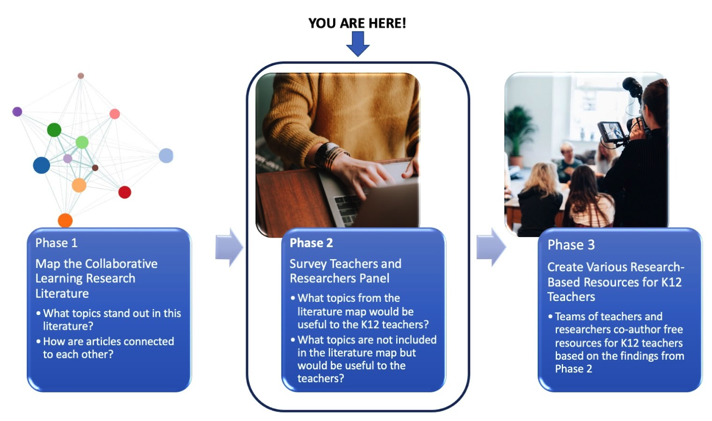

This project aims to create evidence-based resources for collaborative learning in science, engineering, mathematics, and technology (STEM) for K12 teachers. To determine the topics covered in the rich literature on collaborative learning, we have created a map of the research literature (Phase 1 of the project). We are now convening a panel of teachers and researchers to decide which topics would be most useful to the K12 teachers (Phase 2). We will consider what the resources for teachers will look like in Phase 3.
